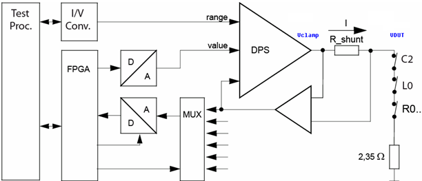
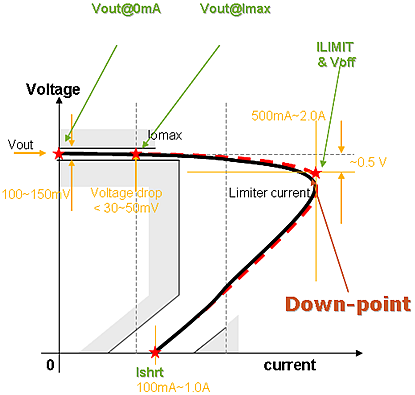
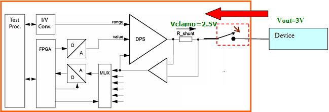

Precharging Makes DC-Scale Current Forcing More Active
Sophia Zhang, Verigy
Paper-ID: 128054 Juli 2011
Abstract
When doing IFVM (current forcing voltage measure) mode, most tester instruments, including DC-Scale, need to define v-clamp to determine the current direction. But for some PMIC tests with special design (for example LDO and BUCK with Overcurrent-Protection), the clamp voltage used for current direction normally will shut-down or even "kill" the device. Setting an appropriate v-clamp value when forcing current becomes a real headache and a difficult thing since a little higher or lower value will make the device into an unexpected status.
Here we will introduce a method using precharging before current forcing to solve this challenge. The device will be precharged before the tester instrument relay closes, and then you can use your instrument to easily force current and clamp voltage to become a "true current direction sign".
Overview of DC-Scale in IFVM mode
In "IFVM" measurement mode, specifying the clamp voltage is used to avoid an overvoltage condition. If the clamp voltage is higher than the voltage of the DUT pin, the programmed force current will flow into the DUT. If the clamp voltage is lower than the voltage of the DUT pin, the programmed force current will flow out of the DUT.

Figure 1. DC-scale IFVM
- Vclamp > VDUT: current flows into DUT
- Vclamp < VDUT:current flows out of DUT
Shut-down Issue in PMIC LDO/BUCK tests
LDO and BUCK are the main modules for PMIC devices and most LDO/BUCK tests use IFVM.
At present, DC Scale is the key VV93000 instrument for PMIC tests. As described in the previous chapter, it needs to set the clamp voltage when using DC-scale to do IFVM test.
Because voltage clamp is used for current direction, nearly all of the tests need negative current; that is, current should flow from the device to DC Scale. Since the real device output is unknown, normally we will set the clamp voltage to 0.5V or 1V lower than the expected values.
But then many engineers will encounter one big issue. Most devices will shut down , then it needs to re-power-up (including register setup as well as status pins setting). It really test time consuming and a headache for test engineers.
Current Over-shooting is the killer The "Down-point" existing in LDO/BUCK devices
Below is a typical output I-V curve of a BUCK/LDO.

Figure 2. LDO/BUCK I-V Curve
Figure-2 shows us that when the current loading is bigger than the limitation , the device output will immediately drop down and the module will shut-down (here we named this point as "Down-point", and the voltage is "Voff").
This is an important device feature named OCP(overcurrent protection) which is used to quickly protect devices when outside loading reaches a high current.
This OCP process is usually irreversible and the device output will never back down again even you decrease the current loading. You have to re-power-up the device by writing registers and setup some pins.
Normally the voltage drop between no loading to limit current is only several hundreds or tens of millivolts.
Over-shoot during hot-switching killed the device
When we do the IFVM test, the DCSCALE actions are as below:
- Close relays (AC_FORCE, H_IMP and AC_SENSE)
- Measure voltage
- Open relays (AC_FORCE, and AC_SENSE)

Figure 3. Current Over-shooting when relay switch on
The voltage at the DC Scale channels before the relay closes is just the clamp voltage and is set by the program. If the voltages drop between the device and DC-scale channels, there will be a current over-shoot at the moment of the relay closing. And this over-shoot will damage the device when the clamp voltage is less than the shut-down voltage (Voff).
As described, the clamp voltage must less than the DUT output to make the load current flow out of the device. To keep the device alive when the relay closes, the clamp voltage should more than the Voff (down-point).
To satisfy the upper 2 requirements, the clamp voltage adjustment range is small and varies greatly from device to device. Many engineers find it difficult to define the IFVM clamp voltage when testing LDO/BUCK devices. Some even get wrong conclusion that DC Scale instruments can only passively, not actively force current, and VV93000 is not suitable for PMIC LDO/BUCK device testing.
However, DC-scale can do current forcing and the VV93000 is the superior tester for PMIC testing.
The wrong conclusion is caused by the device current over-shoot, however, by correctly using the tester the current-over shoot can be avoided.
Precharging can used to prevent over-shooting
Below we will compare the whole IFVM sequence with and without precharging.
Comparing with and without precharging
- IFVM sequence without precharge:
setup DC-Scale -> relay gets closed -> wait internally + user specified wait time
The voltage difference between the instrument and DUT is big, so that for a short time, a big current flows which probably will shut down the device. Keep in mind, there are capacities inside the instrument and the clamp has some delay until it reacts.
- IFVM sequence with precharging:
- precharge -> wait until precharge is settled -> close relay -> setup DC-Scale to force current
- -> precharge -> wait until precharge is settled -> close relay which does not kill the device state, because the preCharge voltage is set close to DUT voltage
- -> setup DC Scale:The power AMP Voltage of DC Scale gets reprogrammed, since the power AMP reacts 'relatively slow', the voltage change happens slowly and the current clamp has enough time to limit the current.
DC Scale example code of IFVM with precharging
Below is a sample code extract from a PMIC BUCK test which requires sinking 100mA to 500mA current with 1mA steps to find the device current limitation point.
- Precharching:
Check that the device is alive. If not:
- Choose Options
- Modify the precharge voltage/ clamp voltage
SPMU_TASK spmuTask, spmuTask1; //no precharge , spmuTask.pin(vout) .preCharge(1.1 V) .vClamp(0 V) .iForce(101 mA) .min(1 V) .max (2 mV) .relay(NT); spmuTask.preAction("NPRM").execMode(FORCE_ON).execute(); - Set high current
Now you can force the expected high current
SPMU_TASK spmuTask1; //no precharge , spmuTask1.iForce(101 mA).vClamp(0 V).min(1 V).max (2V).relay(NO); spmuTask1.preAction("NPRM").execMode(TM::PVAL); spmuTask1.setup(); FOR(INT I= 101; I <=500; I++) { spmuTask1.pin(vout).iForce(I mA); spmuTask1.execute(); FOR_EACH_SITE_BEGIN(); spmuTask.getValue(device); FOR_EACH_SITE_END(); }Note: For the second step you must use a different PMU_TASK object than in step 1.
Conclusions
Precharging has the purpose to make the connection of an instrument to a DUT pin smoother.
Precharging can make IFVM testing more effective without the need to consider the clamping voltage again, and make IFVM really "active".
Typically, the tester instrument has an excellent step response to keep the voltage stable in case the supply current of a device changes. This contradicts the way to limit current fast. But for some highly sensitive devices (especial in PMIC applications), precharging can be applied on the tester side to raise it to the same level (or close to that) of the DUT so that when the relay turns on, there is no significant current over-shoot.